7 Behavioural responses to advice contexts
I suggest that the long-standing view that egocentric discounting reflects sub-optimal information processing is a consequence of taking a narrow view of the problem being solved. While it is indeed demonstrable that people in Judge-Advisor System experiments would perform better and earn more reward if they took more advice (Soll and Larrick 2009), the people who participate in those experiments also have to function in the real world where being too trusting can produce very negative outcomes. Furthermore, advice-taking and decision-making are, like the behaviour of other organisms, ultimately mechanisms for the more efficient propagation of genes. While participants in a Judge-Advisor System are working out how to best weigh their own experience with another opinion, the challenge faced by the genes in their cells is to somehow navigate a complex, often-unreliable, and frequently-changing world in order to produce more copies of themselves. I suggest that egocentric discounting may result from genetic and cultural evolution favouring the default assumption that an individual’s own information is a more reliable basis for decision-making for that individual than another individual’s information.
The evolutionary models offered a proof-of-concept illustration that hyper-priors may evolve under a variety of contextual features that are almost always at least partially true of advice-taking situations. Hyper-priors are expectations that are not changed as a function of experience within the scope of a given scenario, and help form the context within which a scenario occurs, similar to a frame of reference in physics. In advice-taking contexts, a judge’s view of their advisor’s benevolence may fluctuate over the course of a few back-to-back exchanges, whereas their view of the general benevolence of people as a whole is unlikely to change in a meaningful way in that time. The latter, therefore, is a hyper-prior because it contributes to the advice-taking behaviour without being altered by the situation.
Hyper-priors are so termed to distinguish them from priors: expectations that are updated following evidence. In a chaotic world dominated by complex phenomena emerging from the interaction of agents with sophisticated mental processes, sometimes the best genetic strategy is to hedge your bets by building a phenotype that can respond flexibly to different contexts. It may well be, therefore, that people not only have hyper-priors concerning the likely value of advice, but also priors that can respond to different contexts and to changes in context. In this chapter, we explore the flexibility of egocentric discounting in the contexts presented in the previous chapter§6. We present three experiments that examine how advice-taking changes according to the benevolence and the identifiability of advisors. We also include a brief discussion of the literature on advisor expertise.
7.1 Benevolence of advisors
The evolutionary models discussed in the previous chapter§6 demonstrated that optimal advice-taking strategies depend in part upon the advice one receives being a genuine effort to help. Difference in benevolence, or the extent to which the interests of the advisor and the judge overlap, is one of the three pillars of the Mayer, Davis, and Schoorman (1995) model of advice-taking. Despite this, relatively little investigation has been made into the role of benevolence in trust, as discussed previously§5.2.3.2.
Advice-taking can be contingent on the properties of the advice, or on the properties of the advisor. In order to maximise the value of advice while minimising the potential exposure to exploitation, advice-taking should be contingent on a combination of these factors. Where advice is plausible it should be weighted relatively equally, whether it comes from an advisor who is sometimes misleading or not, but where advice is more implausible it should only be trusted when it comes from an advisor who is highly unlikely to be misleading. To explore whether people’s behaviour matches this pattern, participants were recruited for a series of behavioural experiments in which they were given advice on a date estimation task from advisors who were described as either always helpful or occasionally misleading.
We expected that advisor influence would be higher for advice that participants rated as ‘honest’ versus advice rated as ‘deceptive.’ Likewise, we expected that influence would be higher for advisors who were described as ‘always honest,’ even for advice rated as ‘honest.’ In other words, we expect that participants’ advice-taking depends upon both the plausibility of the advice and the benevolence of the advisor.
Early versions of the experiments we conducted used a minimal groups paradigm (Rabbie and Horwitz 1969; Pinter and Greenwald 2011) in an attempt to induce an in-group/out-group distinction in participants. We were not able to get this manipulation to produce difference perceptions of the advisors, as measured by participants’ questionnaire responses, and so we resorted to directly cuing participants about the benevolence of advisors. The experiments presented below, Experiments 5§7.1.1 and 6§7.1.2, are the result of previous experiments exploring how we could represent the manipulation in a way that participants paid attention to and remembered.
7.1.1 Experiment 5: benevolence of advisors
In this experiment, participants were cued as to the benevolence of their advisors. The advice on each trial came from one of two advisors the participants became familiar with over the course of the experiment. Participants were asked to rate the advice prior to submitting their final decisions. We expected that participants would rate advice from an advisor who was more benevolent as more honest, and that they would weigh that advisor’s advice more heavily, even where the advice itself was rated the same.
7.1.1.0.1 Open scholarship practices
This experiment was preregistered at https://osf.io/tu3ev.
This is a replication of a study of identical design that produced the same results.
The data for both this and the original study can be obtained from the esmData R package (Jaquiery 2021c).
A snapshot of the state of the code for running the experiment at the time the experiment was run can be obtained from https://github.com/oxacclab/ExploringSocialMetacognition/blob/b4289fea196f71ccf0ba0b2ae8fde12139a16301/ACv2/db.html.
There were two deviations from the preregistered analysis in this experiment. Several participants used translation software to translate the experiment website. We could not guarantee that the questions were accurately translated and so these participants were excluded. Some participants never rated the Sometimes deceptive advisor’s advice as ‘honest,’ and so they were excluded in the t-test comparing advisors.
7.1.1.1 Method
7.1.1.1.1 Procedure
20 participants each completed 28 trials over 3 blocks of the continuous version of the Dates task§2.1.3.2.2. Participants’ markers covered 11 years, meaning that it would cover an entire decade inclusively, e.g. 1965-1975. When participants received advice, but before they submitted their final decision, they rated the honesty of the advice on a three-point scale (Figure 7.1).
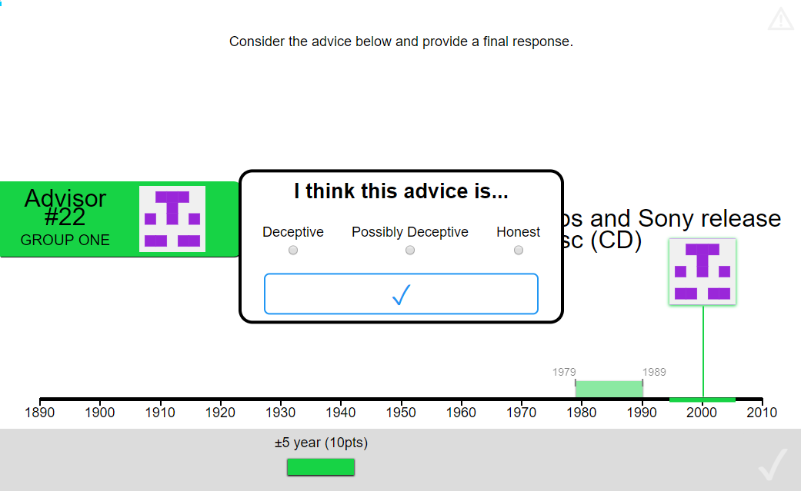
Figure 7.1: Advice honesty rating.
Participants rated advice on a three-point scale according to whether they thought the advice was deceptive or honest.
Participants started with 1 block of 7 trials that contained no advice to allow them to familiarise themselves with the task. All trials in this section included feedback for all participants indicating whether or not the participant’s response was correct.
Participants then did 7 trials with a practice advisor to get used to receiving advice. They also received feedback on these trials. They were informed that they would “get advice on the answers you give” and that the feedback they received would “tell you about how well the advisor does, as well as how well you do.” Before starting the main experiment they were told that they would receive advice from multiple advisors and that “advisors might behave in different ways, and it’s up to you to decide how useful you think each advisor is, and to use their advice accordingly.”
Participants then performed 2 blocks of trials that constituted the main experiment. In each of these blocks participants had a single advisor for 6 trials, plus 1 attention check. No feedback was given on answers in the main experiment blocks.
The two advisors were identical in how they generated advice, but they were labelled differently. The advisors had different coloured backgrounds (e.g., purple and green), and participants were told that the advisor whose background colour matched the participant’s colour “will give you the best advice that they can [original emphasis],” while the advisor who did not match the participant’s colour “might sometimes try to direct you away from the correct answer [original emphasis].” The advisor whose background matched the participant’s colour was labelled as being in ‘group one,’ while the other advisor was labelled as being in ‘group two.’ This visual presentation arose from earlier experiments that implemented (unsuccessfully) a minimal groups paradigm. Colours and the order in which the advisors were encountered were counterbalanced.
7.1.1.1.2 Advice profiles
Despite differences in labelling, the advisors were identical in terms of how they actually produced advice. The advisors offered advice by placing an 11-year wide marker on the timeline. The marker was placed with its centre on a point sampled from a normal distribution around the correct answer with a standard deviation of 11 years in the manner described earlier§2.1.3.2.2.
7.1.1.2 Results
7.1.1.2.0.1 Exclusions
Participants (total n = 20) could be excluded for a number of reasons: failing attention checks, having fewer than 11 trials which took less than 60s to complete, providing final decisions which were the same as the initial estimate on more than 90% of trials, or using non-English labels for the honesty questionnaire. The latter exclusion was added after data were collected because it was not anticipated that participants would use translation software in the task. The numbers of participants who failed the various checks are detailed in Table ??.
The final participant list consists of 17 participants who completed an average of 11.88 trials each.
| Reason | Participants excluded |
|---|---|
| Attention check | 2 |
| Multiple attempts | 0 |
| Missing advice rating | 2 |
| Odd advice rating labels | 1 |
| Not enough changes | 2 |
| Too many outlying trials | 0 |
| Total excluded | 3 |
| Total remaining | 17 |
7.1.1.2.0.2 Task performance
![Task performance for Experiment 5.<br/> A: Response error. Faint lines show individual participant mean error (the absolute difference between the participant's response and the correct answer), for which the violin and box plots show the distributions. The dashed line indicates chance performance. Dotted violin outlines show the distribution of participant means on the original study which this is a replication. The dependent variable here is error, the distance between the correct answer and the participant's answer, and consequently lower values represent better performance. The theoretical limit for error is around 100.](_main_files/figure-html/be-dba-r-performance-1.png)
Figure 7.2: Task performance for Experiment 5.
A: Response error. Faint lines show individual participant mean error (the absolute difference between the participant’s response and the correct answer), for which the violin and box plots show the distributions. The dashed line indicates chance performance. Dotted violin outlines show the distribution of participant means on the original study which this is a replication. The dependent variable here is error, the distance between the correct answer and the participant’s answer, and consequently lower values represent better performance. The theoretical limit for error is around 100.
## Interaction calculation: Initial - FinalParticipants performed as expected, decreasing the error between the midpoint of their answer and the true answer from the initial estimate to the final decision (F(1,16) = 31.85, p < .001; MInitial = 19.07 [14.98, 23.16], MFinal = 11.12 [8.27, 13.97]), which suggests that they incorporated the advice, which was indicative of the correct answer (Figure 7.2). The participants had less error on decisions made with the Always honest advisor than the Sometimes deceptive advisor (F(1,16) = 9.38, p = .007; MAlwaysHonest = 13.24 [10.16, 16.32], MSometimesDeceptive = 16.95 [13.18, 20.72]), although surprisingly there was no statistically significant interaction to indicate that this was due to greater reduction in error scores over time for that advisor (F(1,16) = 1.94, p = .183; MReduction|AlwaysHonest = 9.70 [5.95, 13.44], MReduction|SometimesDeceptive = 6.20 [1.96, 10.43]).
Participants only had one marker they could place, and separate confidence judgements were not asked for, so we cannot directly assess confidence in these data.
7.1.1.2.0.3 Advisor performance
The advice given by the advisors was generated stochastically from the same distribution. Any differences will be random. This was demonstrably the case in the domain of advice error (absolute distance between the centre of the advice marker and the correct year; BFH1:H0 = 1/3.92; MAlwaysHonest = 8.05 [6.81, 9.29], MSometimesDeceptive = 7.90 [6.84, 8.96]). The Bayes’ Factor for the domain of agreement – the absolute distance between the centre of the advice marker and the centre of the participant’s initial estimate marker – was essentially on the threshold (BFH1:H0 = 1/2.96; MAlwaysHonest = 20.14 [16.09, 24.19], MSometimesDeceptive = 21.85 [17.00, 26.70]).
7.1.1.2.0.4 Advice ratings
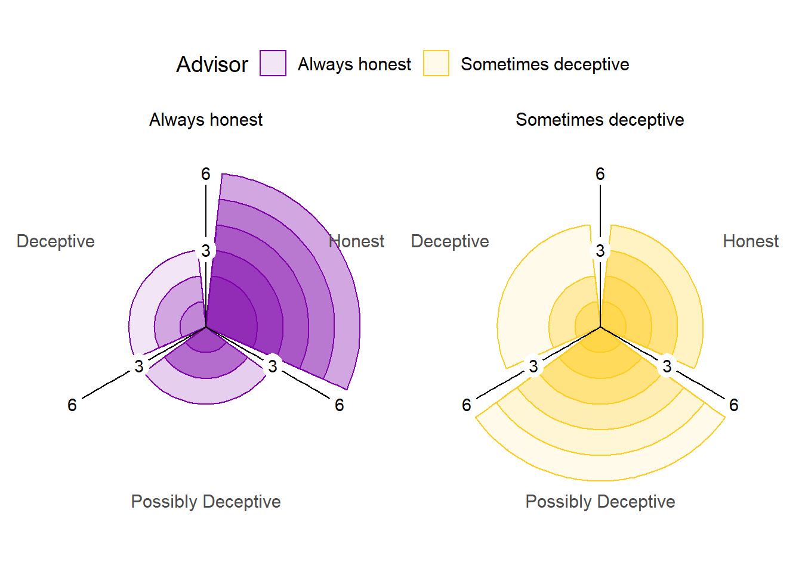
Figure 7.3: Advice rating in Experiment 5.
The polar plots show the number of times each participant gave the given rating to the advice of each advisor. The colour density illustrates the number of participants who gave at least that many ratings to the advice of an advisor.
The advisors’ advice was rated differently by the participants, as shown in Figure 7.3. The difference was statistically significant, indicating that the patterns of ratings differed depending on the advisor giving the advice (\(\chi^2\)(2) = 18.14, p < .001, BFH1:H0 = 335; AlwaysHonest:SometimesDeceptive ratio: Deceptive 0.65, Possibly Deceptive 0.49, Honest 1.82). This indicates that participants understood the task and that the manipulation worked as intended, with more suspicion applied to the advice from the Sometimes deceptive advisor.
7.1.1.2.0.5 Effect of advice
Participants chose their own ratings for the advice, and it was common for participants not to use all ratings for all advisors (e.g. many participants never rated advice from the Always honest advisor as Deceptive). This meant that the statistical tests preregistered for this hypothesis were broken down into separate contrasts of advice and advisor. Using a more complete test, such as 2x3 ANOVA, would have suffered greatly from missing values.
To explore the effect of advice, a 1x3 ANOVA was run on weight on advice across ratings. In all, 11/17 (64.71%) participants had at least one trial rated with each of the three ratings. The weight on advice differed according to the rating assigned the advice (F(2,20) = 9.37, p = .001; MDeceptive = 0.18 [-0.04, 0.41], MPossiblyDeceptive = 0.32 [0.09, 0.55], MHonest = 0.60 [0.46, 0.74]; Mauchly’s test for Sphericity W = .935, p = = .739). As expected, participants were more influenced by advice they rated as Honest compared to advice they rated as Deceptive.
7.1.1.2.0.6 Effect of advisor
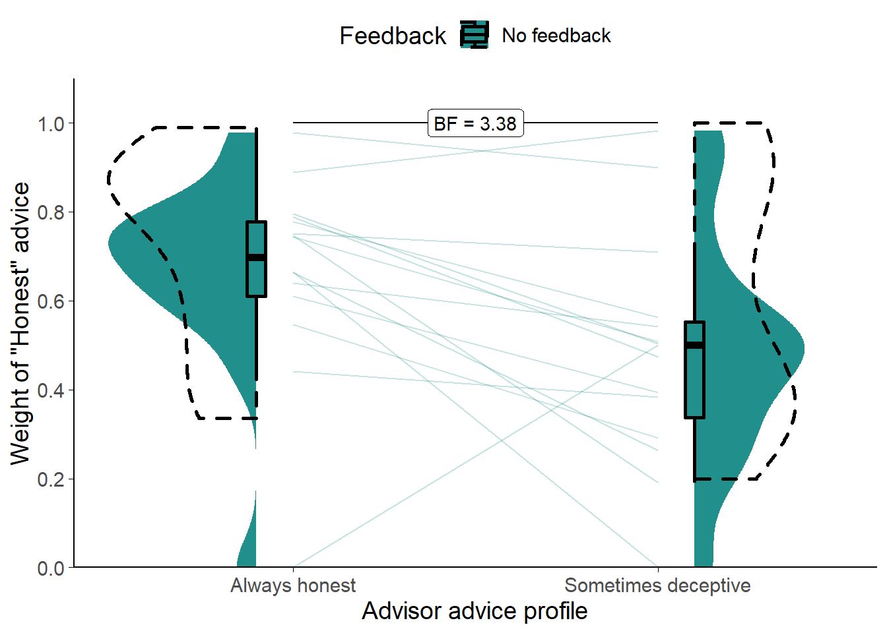
Figure 7.4: Weight on Advice in Experiment 5.
Shows the weight of the advice of the advisors. Only trials where the participant rated the advice as Honest are included. The shaded area and boxplots indicate the distribution of the individual participants’ mean weight on advice. Individual means for each participant are shown with lines in the centre of the graph. The dashed outline shows the distribution of participant means in the original study of which this is a replication.
To distinguish the effects of the advisor from the effects of the advice, we compared weight on advice for only those trials where the participant rated the advice as Honest. This approach has the limitation that 2 (11.76%) participants had to be dropped due to never rating advice from the Sometimes deceptive advisor as Honest.
Comparing the two (Figure 7.4) showed that participants placed more weight on the Honest advice from the Always honest advisor (t(14) = 2.67, p = .018, d = 0.78, BFH1:H0 = 3.38; MAlwaysHonest = 0.67 [0.54, 0.80], MSometimesDeceptive = 0.48 [0.34, 0.62]).
7.1.1.2.1 Exploratory analyses
![Advice response in Experiment 5.<br/> Each point is a single trial, coloured according to the rating given to the advice by the participant. Coloured lines give the best fit linear regression for dots of that colour. The horizontal axis gives the distance between the centre of the participant's initial estimate marker and the centre of the advisor's advice marker, and the vertical axis gives the distance the participant's final decision had moved in the direction of the advisor's advice. Points that lie on the dashed line indicate that the participant moved their marker all the way to the advisor's marker, thus wholly adopting the advisory estimate as their final decision.](_main_files/figure-html/be-dba-r-overall-1.png)
Figure 7.5: Advice response in Experiment 5.
Each point is a single trial, coloured according to the rating given to the advice by the participant. Coloured lines give the best fit linear regression for dots of that colour. The horizontal axis gives the distance between the centre of the participant’s initial estimate marker and the centre of the advisor’s advice marker, and the vertical axis gives the distance the participant’s final decision had moved in the direction of the advisor’s advice. Points that lie on the dashed line indicate that the participant moved their marker all the way to the advisor’s marker, thus wholly adopting the advisory estimate as their final decision.
Figure 7.5 shows the overall pattern of advice-taking in the experiment. The difference in the number of dots of each colour reflects the difference in participants’ ratings of advice between advisors. The lines are best-fits to the dots, and illustrate the relationship between the distance of the advice from the participant’s initial estimate and the amount the participant moved the marker towards the advisor’s advice for their final decision.
A linear mixed model was used to better understand the significance of the relationships in the figure, predicting influence on a trial from the advisor, the distance of the advice, and rating (dummy-coded). Random intercepts were included for participant. A similar Bayesian model was included to produce Bayes factors.
Overall, the distance between the initial estimate and the advice was hugely influential, with an increase in distance leading to an approximately equal increase in influence (\(\beta\) = 0.94 [0.83, 1.05], df = 184.30, p = < .001, BFH1:H0 = 4.4e27). This indicates that the advice rated Honest from the Always honest advisor was generally followed, as is shown clearly in Figure 7.5. This pattern indicates that the participants see the difference between their own estimates and the advisor’s as indicating that they themselves are mistaken. Conversely, the relationship between distance and influence was decreased when the advice came from the Sometimes deceptive advisor, even for advice rated as Honest (\(\beta\) = -0.16 [-0.43, 0.11], df = 180.78, p = = .267, BFH1:H0 = 78.5).
Advice rated as Deceptive from the Sometimes deceptive advisor was substantially less influential (\(\beta\) = 16.24 [1.51, 31.07], df = 175.94, p = = .037, BFH1:H0 = 1/6.72), and this was complemented by the relationship between distance and influence being substantially reduced in this case (\(\beta\) = -0.78 [-1.25, -0.33], df = 177.51, p = = .001, BFH1:H0 = 22.4).
There are other patterns in Figure 7.5 that do not come out in the statistics, possibly due to the very low trial and participant numbers, but are suggestive of a pattern we might expect. The relationship of advice rated Honest is similar between the advisors: as the advice gets further away it retains its level of influence and the participants are willing to go further to match it. This is not tested directly in the statistics, but there is no significant effect of advisor alone (\(\beta\) = 0.87 [-3.57, 5.28], df = 180.44, p = = .705, BFH1:H0 = 1/2.54), the presence of which would indicate that Honest-rated advice differed between advisors. The Bayesian analogue of the test indicated that there was not enough evidence to decide whether Advisor alone was an important factor. The preregistered test of this relationship above§7.1.1.2.0.6, however, did indicate that there was a difference when tested directly.
Similarly, there may be a difference in the way the Possibly Deceptive advice was received from the Sometimes deceptive advisor as compared to the Always honest advisor (7.57 [-2.34, 17.43], df = 181.63, p = = .144, BFH1:H0 = 1/5.73), or in how the influence of this advice related to the distance between the advice and initial estimate markers (-0.29 [-0.74, 0.17], df = 182.50, p = = .225, BFH1:H0 = 1/3.09). The statistics did not support this, and the Bayesian statistics suggested that there was sufficient evidence against either effect being present.
7.1.1.3 Discussion
This experiment provided a first test of the sensitivity of participants’ egocentric discounting behaviour to the context of advice, specifically the likely benevolence (honesty) of the advisor and specific pieces of advice. Both the source and the plausibility of the advice matter, and in this task they interacted such that discounting primarily occurred where advice was offered that differed substantially from the participant’s initial estimate and came from the advisor the participants were told might mislead them. Participants adapted to the context of the advice, both in terms of how readily they were to categorise the advice as dishonest and in terms of how much they were influenced by the advice. As advice got more distant from the initial estimate, i.e. decreased on our measure of plausibility, participants had to decide whether the discrepancy was due to their own error or their advisor’s. Where they believed the advisor was trustworthy, they were more likely to ascribe the error to themselves, rating the advice as honest and adopting it for their final decision. Where they believed the advisor was not trustworthy, they were more likely to label the advice as misleading and to retain their initial estimate as their final decision. Going beyond the obvious, we also saw that participants were more sceptical of advice from the less trustworthy advisor even when they believed the advice was well-meaning.
These observations complement the evolutionary simulations and the benevolence component of the three-factor model of trust described by Mayer, Davis, and Schoorman (1995). Nevertheless, we have demonstrated sensitivity to context, but not universal discounting due to hyper-priors. It remains a matter of speculation that people exercise epistemic hygiene by ensuring that information comes from trusted sources before integrating it, and that no source is as trusted as one’s own mind. This result is in keeping with evidence from experiments where initial estimates are labelled as advice (and vice-versa). Soll and Mannes (2011) collected initial estimates from participants and then presented those estimates back to participants along with advice so participants could provide final decisions in a classic Judge-Advisor System. Unbeknownest to the participants, for some of the questions, the participant’s initial estimate was labelled as the advice, and the advice was labelled as the participant’s initial estimate. For those questions that were switched in this manner, the participants appeared to treat the advice as if it were their own initial decision – placing more weight on the advice than their actual initial decision. If egocentric discounting of advice were due to judges having better access to the reasons for their own estimates, for example, their own initial estimates ought to appear most reasonable and therefore be more influential, regardless of whether they were labelled as “initial estimate” or “advice.” On the other hand, if people use a heuristic that their own opinion is more trustworthy because it is their own opinion, they will rely most on whichever figure is presented as their own initial estimate, as indeed they did.
7.1.1.3.1 Limitations
Even compared to the other experiments in this thesis, these experiments had a low participant count. As with other Dates task studies, data collection stopped when the Bayes Factor for the main experimental hypothesis reached one of the two thresholds (1/3 > BF > 3). This, combined with the low trial count for each participant, meant that there were interesting follow-up questions that the data were unable to address. In keeping with the open science approach, we suggest that future investigations exploring those questions take them as preregistered hypotheses.
The Dates task is one that participants find challenging, leading to generally high levels of advice-taking in the absence of other effects (Gino and Moore 2007; Yonah and Kessler 2021). This means that the Honest advisor seemed to be entirely trusted. As discussed in the introduction to this section§5, however, even greatly trusted advisors’ advice is usually subject to some egocentric discounting.
7.1.2 Experiment 6: benevolence of the advisor population
Experiment 5§7.1.1 showed that participants responded appropriately to benevolent versus less benevolent advisors. In this experiment, participants’ advisors are no longer the same individuals throughout the experiment but are members of two different groups, a benevolent group and a less benevolent group. From the participant’s perspective, one group’s members are all benevolent, while some of the other group’s members are less benevolent. Encountering members of a group of advisors, as opposed to learning about a single advisor, is a closer representation of the situation faced by the agents in scenario 1§6.2 of the evolutionary simulations.
Once again, participants rate the advice before entering their final decision. We expect that advice from the less benevolent group will be less likely to be rated as honest and it will be weighted less in final decision-making.
7.1.2.0.1 Open scholarship practices
This experiment was preregistered at https://osf.io/qjey5.
The experiment data are available in the esmData package for R (Jaquiery 2021c).
A snapshot of the state of the code for running the experiment at the time the experiment was run can be obtained from https://github.com/oxacclab/ExploringSocialMetacognition/blob/1ba333b91366c63a8ab1aed889dd87ea9295a01d/ACv2/dbc.html.
In addition to the exclusion criteria listed in the preregistration, we excluded participants who used translation software when visiting the experiment webpage.
7.1.2.1 Method
7.1.2.1.1 Procedure
The procedure was the same as the procedure for Experiment 5§7.1.1.1.1. Once again, the two advisor groups were identical in how they generated advice, but they were labelled differently. Advisors had different names and avatar images on every trial. The advisors’ background colours indicated which group they were in, with the benevolent advisors’ background matching the participant’s own. Participants were told at the start of each block which context they were in. Before the block with benevolent advisors they were told that the advisors “will all try their best to help you.” Before the block with less benevolent advisors they were told that “some of the advisors may sometimes try to mislead you.” Colours and the order in which the advisor groups were encountered were counterbalanced.
7.1.2.1.2 Advice profiles
Despite differences in labelling, the advisors were identical in terms of how they actually produced advice. The advisors offered advice by placing an 11-year wide marker on the timeline. The marker was placed with its centre on a point sampled from a roughly normal distribution around the correct answer with a standard deviation of 11 years.
7.1.2.2 Results
7.1.2.2.0.1 Exclusions
Participants (total n = 71) could be excluded for a number of reasons: failing attention checks, having fewer than 11 trials which took less than 60s to complete, providing final decisions which were the same as the initial estimate on more than 90% of trials, or using non-English labels for the honesty questionnaire. The latter exclusion was added after data were collected because it was not anticipated that participants would use translation software in the task. The numbers of participants who failed the various checks are detailed in Table ??.
The number of participants excluded was quite high. In part, this was due to an unexpectedly high number of participants completing the experiment using translation software. It may also have been due to the study being run on a weekend, whereas most of the other studies were run during the working week, and it is possible that participants using the recruitment platform at the weekend are less well practised at taking experiments than those using it during the week. The final participant list consists of 46 participants who completed an average of 11.93 trials each.
| Reason | Participants excluded |
|---|---|
| Attention check | 11 |
| Multiple attempts | 3 |
| Missing advice rating | 10 |
| Odd advice rating labels | 9 |
| Not enough changes | 11 |
| Too many outlying trials | 3 |
| Total excluded | 25 |
| Total remaining | 46 |
7.1.2.2.0.2 Task performance
![Task performance for Experiment 6.<br/> A: Response error. Faint lines show individual participant mean error (the absolute difference between the participant's response and the correct answer), for which the violin and box plots show the distributions. The dashed line indicates chance performance. Dotted violin outlines show the distribution of participant means on the original study which this is a replication. The dependent variable here is error, the distance between the correct answer and the participant's answer, and consequently lower values represent better performance. The theoretical limit for error is around 100.](_main_files/figure-html/be-dbc-r-performance-1.png)
Figure 7.6: Task performance for Experiment 6.
A: Response error. Faint lines show individual participant mean error (the absolute difference between the participant’s response and the correct answer), for which the violin and box plots show the distributions. The dashed line indicates chance performance. Dotted violin outlines show the distribution of participant means on the original study which this is a replication. The dependent variable here is error, the distance between the correct answer and the participant’s answer, and consequently lower values represent better performance. The theoretical limit for error is around 100.
## Interaction calculation: Initial - FinalParticipants decreased the error between the midpoint of their answer and the true answer from the initial estimate to the final decision (F(1,45) = 76.09, p < .001; MInitial = 15.03 [13.36, 16.71], MFinal = 10.89 [9.66, 12.12]), which suggests that they incorporated the advice, which was indicative of the correct answer (Figure 7.6). The participants had less error on decisions made with the Honest group of advisors than the Deceptive group of advisors (F(1,45) = 6.12, p = .017; MHonestGroup = 11.97 [10.49, 13.45], MDeceptiveGroup = 13.95 [12.23, 15.68]), although once again the interaction was not significant, so the ANOVA did not demonstrate that this was due to greater reduction in error scores over time for those advisors (F(1,45) = 3.71, p = .060; MReduction|HonestGroup = 4.98 [3.55, 6.41], MReduction|DeceptiveGroup = 3.32 [2.18, 4.46]).
Participants only had one marker they could place, and separate confidence judgements were not asked for, so we cannot directly assess confidence in these data.
7.1.2.2.0.3 Advisor performance
The advice given by the advisors was generated stochastically from the same distribution. Any differences will be random. This was demonstrably the case for both the domain of advice error (absolute distance between the centre of the advice marker and the correct year; BFH1:H0 = 1/4.85; MHonestGroup = 9.12 [8.18, 10.06], MDeceptiveGroup = 8.64 [7.90, 9.38]) and the domain of agreement (absolute distance between the centre of the advice marker and the centre of the participant’s initial estimate marker; BFH1:H0 = 1/3.94; MHonestGroup = 17.56 [15.82, 19.29], MDeceptiveGroup = 18.58 [16.80, 20.36]).
7.1.2.2.0.4 Advice ratings
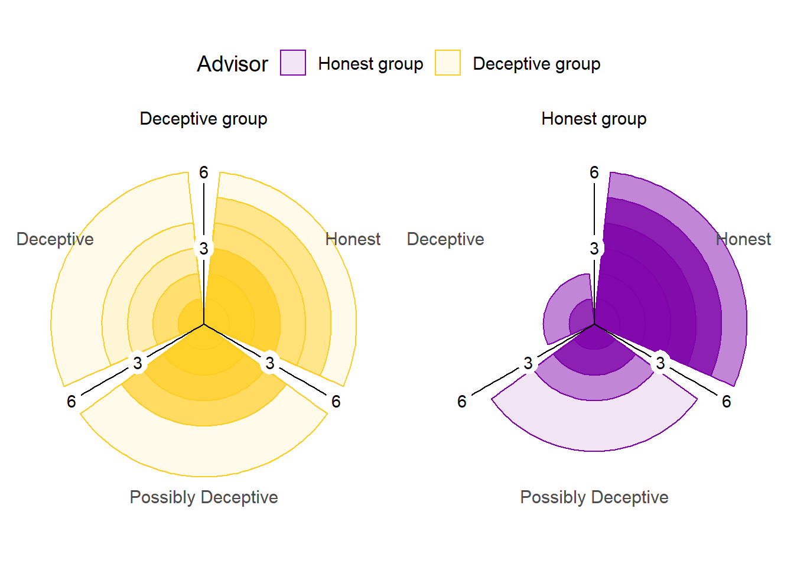
Figure 7.7: Advice rating in Experiment 6.
The polar plots show the number of times each participant gave the given rating to the advice of each advisor. The colour density illustrates the number of participants who gave at least that many ratings to the advice of an advisor.
The advice was rated differently by the participants according to context they were in, as shown in Figure 7.7 (\(\chi^2\)(2) = 40.29, p < .001, BFH1:H0 = 8.7e6; HonestGroup:DeceptiveGroup ratio: Deceptive 0.47, Possibly Deceptive 0.56, Honest 1.62). This indicates that participants understood the task and that the manipulation worked as intended, with more suspicion applied to the advice from the advisors in the Deceptive group.
7.1.2.2.0.5 Effect of advice
Participants chose their own ratings for the advice, and it was common for participants not to use all ratings for all advisors (e.g. many participants never rated advice from the Always honest advisor as Deceptive). This meant that the statistical tests preregistered for this hypothesis were broken down into separate contrasts of advice and advisor. Using a more complete test, such as 2x3 ANOVA, would have suffered greatly from missing values.
To explore the effect of advice, a 1x3 ANOVA was run on weight on advice across ratings. In all, 33/46 (71.74%) participants had at least one trial rated with each of the three ratings. The weight on advice differed according to the rating assigned the advice (F(2,64) = 41.43, p < .001; MDeceptive = 0.06 [0.03, 0.10], MPossiblyDeceptive = 0.29 [0.21, 0.36], MHonest = 0.51 [0.41, 0.61]; Mauchly’s test for Sphericity W = .940, p = = .381). As expected, participants were more influenced by advice they rated as Honest compared to advice they rated as Deceptive.
7.1.2.2.0.6 Effect of advisor
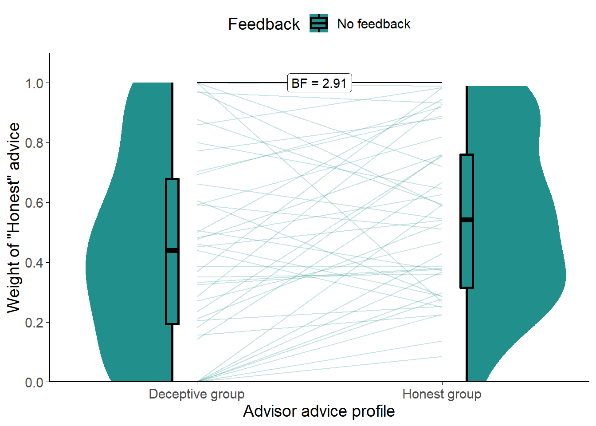
Figure 7.8: Weight on Advice in Experiment 6.
Shows the weight of the advice of the advisors. Only trials where the participant rated the advice as Honest are included. The shaded area and boxplots indicate the distribution of the individual participants’ mean weight on advice. Individual means for each participant are shown with lines in the centre of the graph.
To distinguish the effects of the advisor from the effects of the advice, we compared weight on advice for only those trials where the participant rated the advice as Honest. This approach has the limitation that 3 (6.52%) participants had to be dropped due to never rating advice from the Sometimes deceptive advisor as Honest.
Comparing the two (Figure 7.8) showed that participants placed more weight on the Honest advice from advisors in the Honest group (t(42) = 2.55, p = .014, d = 0.39, BFH1:H0 = 2.91; MHonestGroup = 0.55 [0.47, 0.64], MDeceptiveGroup = 0.44 [0.34, 0.54]), although the Bayes factor was not above our threshold of 3.
7.1.2.2.1 Exploratory analyses
![Advice response in Experiment 6.<br/> Each point is a single trial, coloured according to the rating given to the advice by the participant. Coloured lines give the best fit linear regression for dots of that colour. The horizontal axis gives the distance between the centre of the participant's initial estimate marker and the centre of the advisor's advice marker, and the vertical axis gives the distance the participant's final decision had moved in the direction of the advisor's advice. Points that lie on the dashed line indicate that the participant moved their marker all the way to the advisor's marker, thus wholly adopting the advisory estimate as their final decision.](_main_files/figure-html/be-dbc-r-overall-1.png)
Figure 7.9: Advice response in Experiment 6.
Each point is a single trial, coloured according to the rating given to the advice by the participant. Coloured lines give the best fit linear regression for dots of that colour. The horizontal axis gives the distance between the centre of the participant’s initial estimate marker and the centre of the advisor’s advice marker, and the vertical axis gives the distance the participant’s final decision had moved in the direction of the advisor’s advice. Points that lie on the dashed line indicate that the participant moved their marker all the way to the advisor’s marker, thus wholly adopting the advisory estimate as their final decision.
Figure 7.9 shows the overall pattern of advice-taking in the experiment. A linear mixed model was used to better understand the significance of the relationships in the figure, predicting influence on a trial from the advisor, the distance of the advice, and rating (dummy-coded). Random intercepts were included for participant. A similar Bayesian model was included to produce Bayes factors.
The overall pattern showed both advisors were responded to similarly to the Sometimes deceptive advisor in Experiment 5 (Figure 7.5). For advice rated as Honest from the Honest group of advisors, the distance between the initial estimate and the advice was hugely influential, with an increase in distance leading to an approximately equal increase in influence (\(\beta\) = 1.01 [0.94, 1.08], df = 521.77, p = < .001, BFH1:H0 = 3e100). This pattern was neither clearly different nor clearly the same for advice rated as Honest from the Deceptive group of advisors (\(\beta\) = -0.22 [-0.37, -0.08], df = 522.52, p = = .003, BFH1:H0 = 1/1.19).
Compared to advice rated as Honest, advice rated as Deceptive had a much flatter relationship with distance (when coming from the Honest group of advisors: \(\beta\) = -0.91 [-1.09, -0.73], df = 521.92, p = < .001, BFH1:H0 = 5.7e30; when coming from the Deceptive group of advisors: \(\beta\) = 0.17 [-0.08, 0.42], df = 524.15, p = = .177, BFH1:H0 = 1/4.46). Advice rated as Possibly Deceptive did not show this nearly flat relationship, but neither was it clearly the same as advice rated Honest in its relationship with distance (\(\beta\) = -0.52 [-0.64, -0.39], df = 522.22, p = < .001, BFH1:H0 = 2.3e9), and it is likely more evidence would reveal a subtler pattern in the direction of that found for advice rated as Deceptive. The relationship of advice rated as Possibly Deceptive to distance was, however, different between advisor groups, with the Possibly Deceptive advice being considered more trustworthy as it got more distant when it came from the Deceptive group of advisors (\(\beta\) = 0.32 [0.12, 0.51], df = 520.54, p = = .002, BFH1:H0 = 12.9). This surprising result may be due to participants applying different criteria to judging the deceptiveness of advice according to the advisors giving it.
More clearly visible in Figure 7.9 than Figure 7.5, but present in both, is the tendency for participants to rate advice as Deceptive more frequently as it is further away from their initial estimates. Notably, this appears more common for the Sometimes deceptive advisor and the Deceptive group of advisors. For the Always honest advisor and the Honest group of advisors, even advice that is far away from the participant’s initial estimate is often rated as and treated as honest.
7.1.2.3 Discussion
This experiment followed up on the findings in Experiment 5§7.1.1.3 by presenting participants with a context in which advisors were more or less likely to be benevolent, rather than having participants form a relationship with an advisor who was more or less likely to be benevolent. This shift from relationship to context means that the experiment is slightly closer to scenario 1 in our evolutionary models§6.2.
Whereas in Experiment 5 we saw that both the advice and its source mattered for how much participants followed advice, and we saw a suggestion of the same in Experiment 6. In both cases participants were more likely to appraise advice as helpful (and to follow it accordingly) when the source of the advice was trustworthy. In terms of our simulations, this suggests that the effect of context may increase egocentric discounting more through increasing the frequency with which judges wholly disregard advice than through decreasing the extent to which they take advice uniformly across all interactions. Put simply, they are more on their guard for bad advice, but once they accept advice is good they may treat it fairly normally.
This differs somewhat from the effect of building a relationship with a single advisor. In this case, while advice is judged similarly warily when it might be deceptive, even advice judged as Honest is accepted much more hesitantly. Both ignoring advice more frequently and accepting advice more tentatively appear the same when the advice-taking is represented using an average over multiple trials. Overall, the results of Experiments 5 and 6 illustrate that people respond flexibly to changes in the likely benevolence of advice, and that this can affect their relationships with individual advisors.
7.2 Noise in the advice
The second scenario§6.3 explored in the evolutionary models added noise to the advice agents received and demonstrated that this provided an evolutionary pressure towards egocentric discounting. The addition of noise in a point-value estimation task lowers the relative performance, and thus this scenario was essentially a manipulation of advisor expertise. This scenario is not explored in behavioural experiments because its conclusions are well supported by existing literature. Specifically, the literature demonstrates the normativity of discounting where the judge outperforms the advisor, that advice-taking is sensitive to advisor expertise, and that people are likely to consider themselves superior to the average advisor. This demonstration is supplemented with a more comprehensive model of the utility of advice according to the ability to identify the more expert opinion, the relative accuracy of the advisor and judge, and the independence of the opinions (Soll and Larrick 2009). A more complete account of the effects of advisor expertise was provided earlier§5.2.3.1.
Views of relative expertise may also be affected by self-enhancement bias wherein people typically assess their own abilities to be above average (Brown 1986). We expect that perception of relative expertise is somewhat dependent upon the difficulty of the task presented; people faced with a difficult task will under- rather than overestimate their ability relative to others (Gino and Moore 2007). Taken together, then, people are likely to consider themselves more able on a given task than an arbitrary advisor, and consequently that they are likely to down-weight advice relative to their own initial estimate. This behaviour is supported by normative models which show biasing towards the better estimator (in this case the judge) is the optimal strategy (Soll and Larrick 2009; Mahmoodi et al. 2015). As discussed in scenario 2§6.3.3, the belief that one is better at a task than the average advisor may not be misguided: advisors may not dedicate the same amount of time, concentration, or thought to producing advice as judges do for initial estimates. Judges have to live with the consequences of their decisions, whereas advisors do not.
7.3 Confidence mapping
The third scenario§6.4 explored in the evolutionary models assigned each agent a confidence mapping, and demonstrated that discounting emerged as an appropriate response where the advisor’s confidence mapping was unknown. The key difficulty in conducting behavioural experiments to test the effects of known versus unknown confidence mapping is finding a manipulation of confidence mapping knowledge which is not confounded by familiarity with an advisor or the amount of information provided by an advisor.
We attempted to investigate this in two ways. Firstly, we performed an experiment where participants received advice over blocks of trials from either the same advisor on each trial or a different advisor on each trial (Experiment 7§7.3.1). Repeated interactions with a single advisor should allow a participant to understand the advisor’s confidence mapping, whereas if the advisor changes on every trial the participants instead have to interpret the advice in a more generic manner. Secondly, we familiarised participants with two advisors who differed in their use of the confidence scale, and then tested whether participants responded differently based on whether they could identify which of those two advisors was providing advice (Experiment 8§7.3.2).
To look ahead briefly, neither experiment provided evidence consistent with the hypothesis that familiarity with an advisor’s confidence calibration leads to greater trust in that advisor’s advice. We suggest that this may be a failure in experimental design rather than reliable evidence of the absence of this feature of advice-taking behaviour.
7.3.1 Experiment 7: individuality as a cue to confidence
The expression of confidence is highly idiosyncratic (Ais et al. 2016; Navajas et al. 2017). Given this, we hypothesised that the same advice may be treated differently depending upon whether or not it was labelled as coming from repeated interactions with a single individual or from a series of one-off interactions with different individuals. Where the advice comes from the same individual over and over again, participants should become more aware of that individual’s confidence calibration (the relationship between their confidence and the probability they are correct), and should thus be able to better discriminate higher-quality (more confident) advice.
In this experiment the effect of individuality is confounded with familiarity, a feature that we expect will increase the palatability of advice. While participants are learning about the advisors, and learning more about the confidence calibration of the individual advisor than that of the group members, they are also becoming more familiar with the individual advisor. Nevertheless, this is a useful experiment because it is capable of indicating the absence of an effect: if the manipulation proves unable to produce greater influence from the individual advisor it will do so despite rather than because of the familiarity confound. If the experiment demonstrates higher influence for the individual advisor then further experiments can be run to attempt to isolate confidence calibration knowledge from mere exposure.
7.3.1.1 Open scholarship practices
This experiment was not preregistered because it was highly exploratory.
The experiment data are available in the esmData package for R (Jaquiery 2021c).
A snapshot of the state of the code for running the experiment at the time the experiment was run can be obtained from https://github.com/oxacclab/ExploringSocialMetacognition/blob/4d8aace6b864c4465cacd8579ec1abd870dd65d2/ACBin/ce.html.
7.3.1.2 Method
7.3.1.2.1 Procedure
33 participants each completed 40 trials over 5 blocks of the binary version of the Dates task§2.1.3.2.3. In these experiments, advisors gave advice that included confidence. The advisor’s confidence in their response was indicated by the height of the advisor’s avatar on the indicated bar (Figure 7.10).
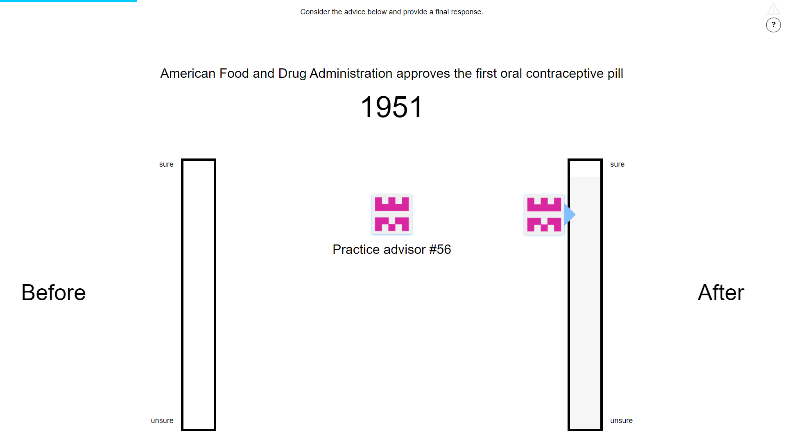
Figure 7.10: Advice confidence.
Advisors’ markers shifted position vertically to indicate the confidence with which the advice was given. As with the participants’ own responses, higher placement on the column indicated higher confidence.
Participants started with 1 block of 7 trials that contained no advice. All trials in this section included feedback for all participants indicating whether or not their response was correct.
Participants then did 3 trials with a practice advisor. They also received feedback on these trials. They were informed that they would “get advice about the correct answer” and that the “advisors indicate their confidence in a similar way to you, by placing their marker higher on the scale if they are more sure.”
Participants then performed 4 blocks of trials that constituted the main experiment. These blocks came in pairs, with each pair containing one block of 10 trials that included feedback followed by one block of 5 trials that did not include feedback. The first block served to allow the participants to familiarise themselves with the confidence calibration of their advisor in the individual case, or to experience the range of advisors available in the group case. The feedback on these trials allowed participants to recognise the usefulness of the advice, and potentially to observe its relationship between higher confidence and higher accuracy. The second block allowed us to test the influence of advice without further feedback learning effects. 1 trial in the first block in each pair was an attention check trial. Each pair of blocks had a different advisor presentation.
In one of the pairs of blocks, the advice was always labelled as coming from the same advisor. In the other pair of blocks, the advice on each trial was labelled as coming from a different advisor. The order that the participants encountered these presentations in was counterbalanced.
7.3.1.2.2 Advice profiles
Despite differences in labelling, the advisors were identical in terms of how they actually produced advice because we were interested in whether, when there was the same thing to learn (calibration of advice confidence) it would be learned when interacting with a single advisor but not when interacting with a group of advisors. The advice was determined on each trial by selecting a point drawn from a normal distribution around the correct answer with standard deviation of 8 years. This point served as the advisor’s internal estimate of the correct answer. The advisor then gave the appropriate answer according to whether or not the internal estimate was before or after the anchor year, and linearly scaled their confidence based on the distance between those two years. The advisor was maximally confident where the difference between the internal estimate and the anchor year was at least 20 years.
7.3.1.3 Results
7.3.1.3.1 Exclusions
Participants (total n = 33) were excluded for a number of reasons: having fewer than 10 no-feedback trials which took less than 60s to complete, or providing final decisions which were the same as the initial estimate on more than 90% of trials. Table ?? shows the number of participants excluded and the reasons why. Participants who failed attention checks would have been immediately dropped, but no participants did so.
The final participant list consists of 27 participants who completed an average of 28.00 trials each.
| Reason | Participants excluded |
|---|---|
| Multiple attempts | 0 |
| Not enough changes | 3 |
| Too many outlying trials | 3 |
| Total excluded | 6 |
| Total remaining | 27 |
7.3.1.3.2 Task performance
![Response accuracy for Experiment 7.<br/> Faint lines show individual participant means, for which the violin and box plots show the distributions. The dashed line indicates chance performance. Dotted violin outlines show the distribution of actual advisor accuracy.<br/> Because there were relatively few trials, the proportion of correct trials for a participant generally falls on one of a few specific values. This produces the lattice-like effect seen in the graph. Some participants had individual trials excluded for over-long response times, meaning that the denominator in the accuracy calculations is different, and thus producing accuracy values which are slightly offset from others'.](_main_files/figure-html/be-ce-r-performance-acc-1.png)
Figure 7.11: Response accuracy for Experiment 7.
Faint lines show individual participant means, for which the violin and box plots show the distributions. The dashed line indicates chance performance. Dotted violin outlines show the distribution of actual advisor accuracy.
Because there were relatively few trials, the proportion of correct trials for a participant generally falls on one of a few specific values. This produces the lattice-like effect seen in the graph. Some participants had individual trials excluded for over-long response times, meaning that the denominator in the accuracy calculations is different, and thus producing accuracy values which are slightly offset from others’.
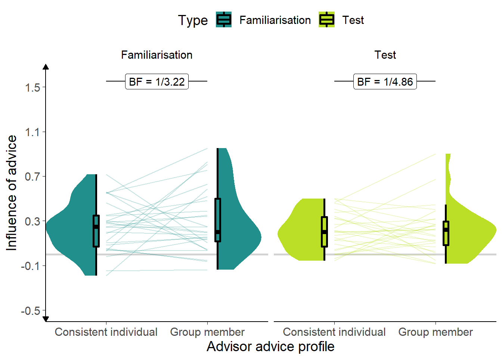
Figure 7.12: Influence for Experiment 7.
Participants’ weight on the advice for advisors in the Familiarisation and Test stages of the experiment. The shaded area and boxplots indicate the distribution of the individual participants’ mean influence of advice. Individual means for each participant are shown with lines in the centre of the graph. The theoretical range for influence values is [-2, 2].
## Interaction calculation: Final decision - Initial estimate## Interaction calculation: Consistent individual - Group memberWe present an overview of participants’ performance in the task in Figures 7.11 and 7.12 and detail some key features using statistical tests. The key analysis of our hypothesis, exploring the effect of advisor presentation, is presented below§7.3.1.3.4.
A first analysis assessed differences participants’ accuracy, using a within-participant ANOVA with factors of answer (initial estimate versus final decision) and advisor (Consistent individual versus Group member). Accuracy during the Familiarisation trials (Figure 7.11) was higher for final decisions than for initial estimates (F(1,26) = 31.69, p < .001; MFinalDecision = 0.72 [0.68, 0.76], MInitialEstimate = 0.58 [0.51, 0.64]), so participants’ accuracy improved after advice. Accuracy was also higher for the Consistent individual advisor than for the Group members (F(1,26) = 6.35, p = .018; MConsistentIndividual = 0.69 [0.63, 0.75], MGroupMember = 0.60 [0.55, 0.66]). There was no significant effect of advisor presentation on improvement (F(1,26) = 2.81, p = .106; MImprovement|ConsistentIndividual = 0.10 [0.04, 0.16], MImprovement|GroupMember = 0.18 [0.10, 0.26]). This peculiar pattern was driven by a significant difference in participants’ accuracy rates between advisors on their initial decisions, i.e. before they had seen advice (BFH1:H0 = 14.4; MConsistentIndividual = 0.64 [0.56, 0.72], MGroupMember = 0.51 [0.44, 0.59]). It is not clear why this occurred; it was likely the result of random chance.
A second ANOVA was run to explore the effects of advisor influence, using factors of advisor (Consistent individual versus Group member) and stage (Familiarisation versus Test). The influence of advisors might differ according to whether participants had learned become familiar with them, hence separating out the initial Familiarisation trials (that contained feedback) from the later Test trials (that did not) might provide some evidence of learning. No significant effects were found for influence (Figure 7.12). Neither the advisor presentation (F(1,26) = 0.61, p = .442; MConsistentIndividual = 0.23 [0.16, 0.29], MGroupMember = 0.26 [0.17, 0.35]), nor whether the trial was in the Familiarisation stage (with feedback) or the test stage (without feedback) appeared to be systematically linked to the influence of the advice (F(1,26) = 3.62, p = .068; MFamiliarisation = 0.27 [0.19, 0.35], MTest = 0.21 [0.15, 0.27]). There was also no indication that the influence of the advisors’ advice changed differently between stages (F(1,26) = 0.64, p = .432; MIndividual-Group|Familiarisation = -0.06 [-0.20, 0.07], MIndividual-Group|Test = -0.01 [-0.10, 0.09]).
7.3.1.3.3 Advisor performance
The advice is generated probabilistically using the same rules for both advisor presentations. The advisors’ advice is not dependent on the participants’ initial estimates, but it is useful nevertheless to compare the advisors’ agreement and accuracy rates. The advisors were demonstrably similar in their overall agreement rates (BFH1:H0 = 1/4.74; MConsistentIndividual = 0.59 [0.52, 0.66], MGroupMember = 0.60 [0.53, 0.68]), but not so in their accuracy rates (BFH1:H0 = 1/2.24; MConsistentIndividual = 0.78 [0.74, 0.82], MGroupMember = 0.74 [0.69, 0.79]). They were not demonstrably different in their accuracy rates, however, so the randomisation worked sufficiently well to allow the results to be interpreted.
7.3.1.3.4 Effect of advisor presentation
The hypothesis for this study was that, in the key Test trials where participants did not receive feedback, the advisor presented as a consistent individual would be more influential than the advisor presented as different members of a group on each trial. As illustrated in the right-hand panel of Figure 7.12, influence was equivalent between the advisor presentations on the Test trials (t(26) = -0.14, p = .886, d = 0.03, BFH1:H0 = 1/4.86; MConsistentIndividual = 0.21 [0.14, 0.28], MGroupMember = 0.22 [0.13, 0.30]). From this we can conclude that the manipulation was not effective in differentiating the advisors or that such differences as were produced do not affect the influence of advice.
7.3.1.4 Discussion
This experiment provided evidence against the prediction that participants would take more advice where they could learn about an individual advisor’s confidence calibration. We presented participants with the same advice, labelled either as always coming from the same advisor or as coming from a different advisor on each trial. We had expected that presenting participants with a single advisor would allow them to learn about that advisor’s ability to perform the task, and how well their confidence was calibrated (i.e. how strong was the relationship between increased confidence and increased probability of being correct). However, contrary to our key prediction, we did not observe differences in the influence of advice as a function of the presentation of the advisor.
Two reasons why we failed to detect the effects may be that the manipulation was not powerful enough or that there is no systematic relationship between calibration knowledge (and familiarity more generally) and advice influence. The manipulation may not have been strong enough because participants may have paid relatively little attention to the identity of the advisor and focused more on the content of the advice. Participants may also have learned about the calibration distributions just the same for individual and group advisors: statistically the experience is the same and some research has suggested that statistical mechanisms such as associative learning may be sufficient to explain social learning phenomena (Behrens et al. 2008; FeldmanHall and Dunsmoor 2019). It is also possible, though we suspect less likely given prior evidence of sensitivity to calibration (Pescetelli and Yeung 2021), that the participants were simply unable to distinguish the advisors even in principle, or that any distinction they did make failed to translate into differential influence.
7.3.2 Experiment 8: identifiability of advice
The results of Experiment 7 were not promising. Consequently, we used a different manipulation in an attempt to place the calibration of the advice in the forefront of participants’ experience. To this end, we familiarised participants with two advisors whose accuracy, probability of agreement, and confidence calibration were identical, but whose use of the confidence scale differed. A Low confidence advisor used the bottom two-thirds of the confidence scale, while a High confidence advisor used the top two-thirds.
On Key trials, participants frequently saw advice where the confidence lay in the middle third of the scale. On some of these trials, the advice was labelled as coming from a specific advisor. If the advice came from the Low confidence advisor it would represent high confidence advice, and imply a high probability that it was correct. If the advice came from the High confidence advisor, it would represent low confidence advice, and imply a low probability that it was correct. On the remainder of these trials, the advice was labelled as coming from an unknown one of those two advisors. We expected that advice that was labelled in this way would be treated differently relative to advice that was identifiable because it was impossible for participants to appropriately interpret the confidence (and therefore probability of correctness) of the advice.
7.3.2.1 Open scholarship practices
This experiment was not preregistered because it was exploratory.
The experiment data are available in the esmData package for R (Jaquiery 2021c).
A snapshot of the state of the code for running the experiment at the time the experiment was run can be obtained from https://github.com/oxacclab/ExploringSocialMetacognition/blob/9ac26116e348f8c4ff5617a8e68710b889bc7e08/ACBin/ck.html.
7.3.2.2 Method
7.3.2.2.1 Procedure
48 participants each completed 67 trials over 5 blocks of the binary version of the Dates task§2.1.3.2.3. The procedure for filling in responses and the way the advice was represented was the same as described for Experiment 7§7.3.1.
Participants started with 1 block of 10 trials that contained no advice, to allow them to familiarise themselves with the task. All trials in this section included feedback for all participants indicating whether or not their response was correct.
Participants then did 9 trials with a practice advisor to get used to receiving advice. They also received feedback on these trials. They were informed that they would “get advice about the correct answer” and that the “advisors indicate their confidence in a similar way to you, by placing their marker higher on the scale if they are more sure.”
Before performing trials with an advisor, participants saw the advisor’s avatar alongside a speech bubble in which the advisor introduced themself. On the same screen, participants saw a scorecard for that advisor (Figure 7.13). Scorecards were introduced to the participant after the initial practice (without advice).
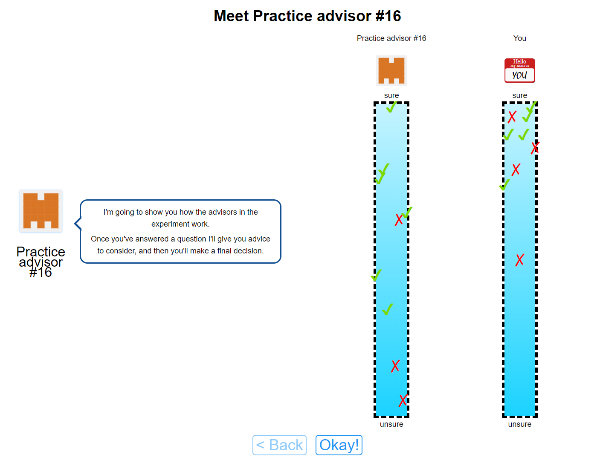
Figure 7.13: Advice scorecard for Experiment 8.
The scorecards indicated the relationship between confidence and accuracy, allowing participants to see how well calibrated they or an advisor was.
Participants then performed 3 blocks of trials that constituted the main experiment. In the first 2 blocks participants were familiarised with their advisors over 10 trials each (1 of which was an attention check). The order in which participants encountered the advisors was counterbalanced, and participants received feedback during these Familiarisation trials.
Finally, participants performed 1 block of 28 Test trials that did not include feedback about the correct answer. Before this block, participants were reminded again about their advisors, and shown the introduction screen with the scorecards for each advisor again. The scorecards were shown individually, and then displayed on the same screen next to one another, and the participants invited to “compare them with one another.” During these Test trials, advice was sometimes labelled as coming from a specific one of the advisors encountered during the Familiarisation trials, and sometimes the advice was labelled as coming from an unspecified one of those advisors.
7.3.2.2.2 Advice profiles
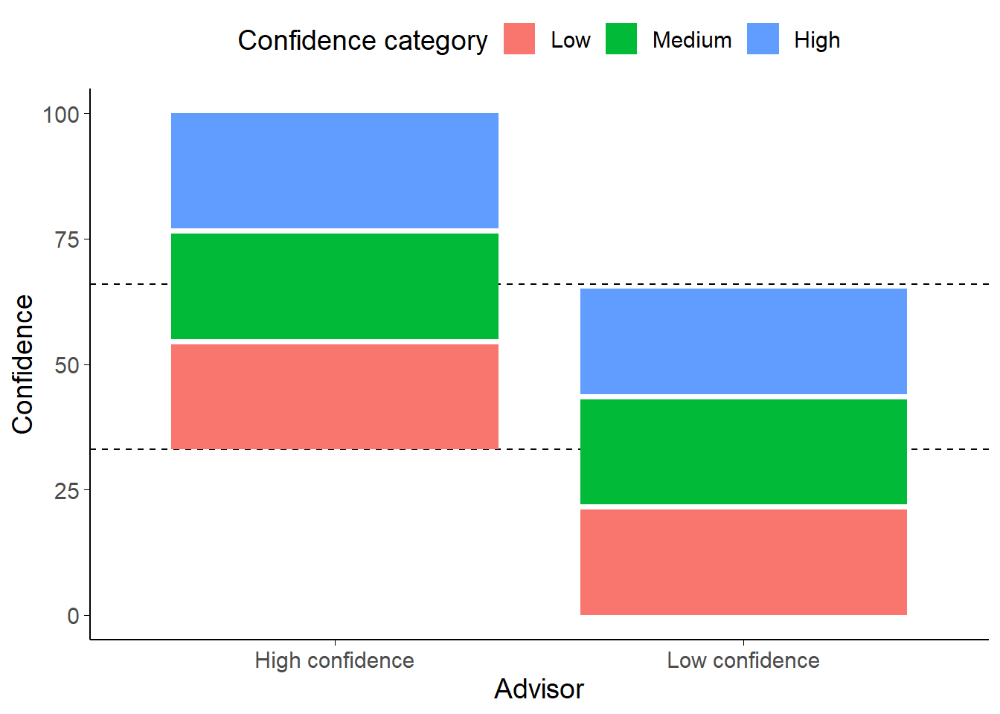
Figure 7.14: Advice distribution map for advisors in Experiment 8.
The High confidence equates to 100% correct, Medium to 66%, and Low to 33%. The dashed lines show the overlap area between the minimum confidence for the High confidence advisor and the maximum confidence for the Low confidence advisor. Note that the advisors are not equally correct on average in this zone: the Low confidence advisor is substantially more accurate because they are idiosyncratically more confident.
There are two advisors in this experiment, a High confidence advisor and a Low confidence advisor. Before the Familiarisation block with each advisor, the advisors introduced themselves with a statement about their advice-giving style. The High confidence advisor stated “I’m confident and outgoing. I tend to make up my mind and stick to it.” The Low confidence advisor stated “I’m cautious and careful. I try to keep an open mind even when I’ve made my choice.”
The Advice profiles (Figure 7.14) for the two advisors were balanced in terms of the information provided by each advisor: both advisors had a subjectively high confidence at which they were 100% accurate, a medium confidence range within which they were 66% accurate, and a low accuracy range in which they were 33% accurate. Crucially, these ranges span different parts of the confidence scale; the Low confidence advisor never expressed confidence above 66%, and the High confidence advisor never expressed confidence below 33%.
The advisor’s advice during the Familiarisation phase was choreographed to provide all participants with an exact insight into the underlying calibration. Each advisor offered three estimates in each of their three confidence zones. All of the high-confidence advice was correct, two of the medium-confidence, and one of the low-confidence.
During the Test phase, advisors provided advice while either labelled unambiguously, as they had been during the Familiarisation phase, with their avatar and advisor number, or ambiguously, with a hybrid avatar and question marks instead of the advisor number. Each advisor offered 7 pieces of advice while labelled unambiguously, and 7 while labelled ambiguously. Each of these sets of 7 advice had the following structure: three trials in the third of the confidence scale unique to the advisor that were correct, two trials in the ambiguous third of the confidence scale where the advisor agreed with the participant’s initial estimate, and two trials in the ambiguous third where the advisor disagreed with the participant’s initial estimate.
The decision to include advice outside the ambiguous third of the confidence scale (between the dashed lines in Figure 7.14)) was taken with the aim of ensuring participants’ experience of the advice during the Test phase felt natural. Unfortunately, this meant that the advisors either had to degrade their calibration or they had to have different accuracy rates (either overall or within the ambiguous third of the confidence scale). Between these two lemmas we opted for the former, meaning that during the Test phase the Low confidence advisor’s calibration changed such that all low-confidence advice was accurate.
The most important feature of this complex advice profile construction is that there are an equal number of trials that have advice with confidence in the ambiguous range for each advisor and for each presentation (ambiguous or identifiable). Within these trials, agreement is also tightly controlled meaning that each advisor-presentation combination agrees on half the trials and disagrees on half the trials. These 16 Key trials are central to testing our hypothesis that participants will be less influenced by advice when the source is ambiguous, so it is important that they are as balanced as possible for agreement and number.
7.3.2.3 Results
7.3.2.3.1 Exclusions
Participants (total n = 48) were excluded for a number of reasons: having fewer than 16 Key trials which took less than 60s to complete, or providing final decisions which were the same as the initial estimate on more than 90% of trials. Table ?? shows the number of participants excluded and the reasons why.19 Participants who failed attention checks do not reach this stage of the experiment.
The final participant list consists of 33 participants who completed an average of 45.91 trials each. Many participants were excluded using our typical exclusion criteria, but the results of the main statistical tests are the same when participants who seldom altered their responses are left in the sample, even where they did not complete the entire study.
| Reason | Participants excluded |
|---|---|
| Multiple attempts | 2 |
| Not enough changes | 13 |
| Study incomplete | 12 |
| Too many outlying trials | 0 |
| Total excluded | 15 |
| Total remaining | 33 |
7.3.2.3.2 Task performance
![Response accuracy for Experiment 8.<br/> Faint lines show individual participant means, for which the violin and box plots show the distributions. The full width dashed line indicates chance performance, and the half width dashed lines indicate advisor accuracy. Because there were relatively few trials, the proportion of correct trials for a participant generally falls on one of a few specific values. This produces the lattice-like effect seen in the graph. Some participants had individual trials excluded for over-long response times, meaning that the denominator in the accuracy calculations is different, and thus producing accuracy values which are slightly offset from others'.](_main_files/figure-html/be-ck-r-performance-acc-1.png)
Figure 7.15: Response accuracy for Experiment 8.
Faint lines show individual participant means, for which the violin and box plots show the distributions. The full width dashed line indicates chance performance, and the half width dashed lines indicate advisor accuracy. Because there were relatively few trials, the proportion of correct trials for a participant generally falls on one of a few specific values. This produces the lattice-like effect seen in the graph. Some participants had individual trials excluded for over-long response times, meaning that the denominator in the accuracy calculations is different, and thus producing accuracy values which are slightly offset from others’.
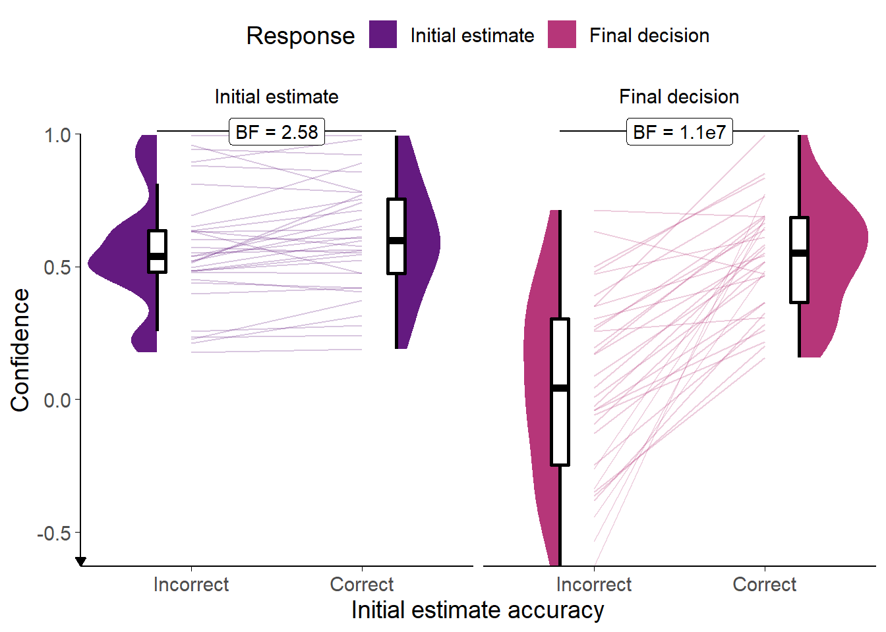
Figure 7.16: Confidence for Experiment 8.
Faint lines show individual participant means, for which the violin and box plots show the distributions. Final confidence is negative where the answer side changes. Theoretical range of confidence scores is initial: [0,1]; final: [-1,1].
## Interaction calculation: Final decision - Initial estimate## Interaction calculation: Initial estimate - Final decisionWe first characterise the participants’ performance on the task. We investigated participant accuracy in the Familiarisation trials using a 2x2 ANOVA with within-participant factors of answer time (initial estimates versus final decisions) and advisor (High confidence versus Low confidence). Participants increased their accuracy (Figure 7.15) from initial estimate to final decision (F(1,32) = 29.53, p < .001; MFinalDecision = 0.75 [0.71, 0.79], MInitialEstimate = 0.66 [0.60, 0.71]). There was no evidence of a difference between the advisors in either overall accuracy (F(1,32) = 0.09, p = .770; MHighConfidence = 0.70 [0.65, 0.75], MLowConfidence = 0.71 [0.65, 0.76]) or in the increase in accuracy following advice (F(1,32) = 0.28, p = .600; MImprovement|HighConfidence = 0.08 [0.03, 0.13], MImprovement|LowConfidence = 0.10 [0.06, 0.15]).
We also investigated the participants’ confidence on Familiarisation trials using a 2x2 ANOVA with factors of answer time (initial estimates versus final decisions) and initial estimate correctness (initial estimate was correct versus initial estimate was incorrect). This analysis allows us to get a sense of whether their confidence changes systematically after encountering advice and whether it does so more when their initial decision was correct. Participants were more confident (Figure 7.16) in their responses when their initial estimate was correct (F(1,32) = 63.93, p < .001; MCorrect = 0.57 [0.51, 0.64], MIncorrect = 0.31 [0.23, 0.39]). They were systematically less confident on final decisions compared to initial estimates (F(1,32) = 46.58, p < .001; MInitialEstimate = 0.58 [0.51, 0.66], MFinalDecision = 0.30 [0.21, 0.38]), and that confidence decrease was larger when the initial estimate was incorrect (F(1,32) = 72.89, p < .001; MDecrease|Correct = 0.06 [-0.01, 0.13], MDecrease|Incorrect = 0.51 [0.38, 0.64]). This indicates that participants were adjusting their confidence in a rational manner. There is always more scope for adjusting confidence downwards than upwards (because of the nature of the reporting scale), so it is not strange to see that the average confidence scores are lower for the final decisions than for the initial estimates.
7.3.2.3.3 Effect of advisor presentation
![Key trials in Experiment 8.<br/> Each point represents a single trial for a single participant. The outlines show the overall distribution of trials. Trials were matched for agreement and confidence across advisor presentation and advisor identity. The Flavour trials were included to avoid the feeling of the task changing dramatically from the Familiarisation blocks to the Test block. The Key trials occur where advice could potentially come from either advisor. If the advice came from the High confidence advisor it represented a low confidence response; it if came from the Low confidence advisor it represented a high confidence response. If the advisor came from an ambigous (hybrid) source, the participant would not know whether it represented a high or low confidence response.](_main_files/figure-html/be-ck-r-key-trials-1.png)
Figure 7.17: Key trials in Experiment 8.
Each point represents a single trial for a single participant. The outlines show the overall distribution of trials. Trials were matched for agreement and confidence across advisor presentation and advisor identity. The Flavour trials were included to avoid the feeling of the task changing dramatically from the Familiarisation blocks to the Test block. The Key trials occur where advice could potentially come from either advisor. If the advice came from the High confidence advisor it represented a low confidence response; it if came from the Low confidence advisor it represented a high confidence response. If the advisor came from an ambigous (hybrid) source, the participant would not know whether it represented a high or low confidence response.
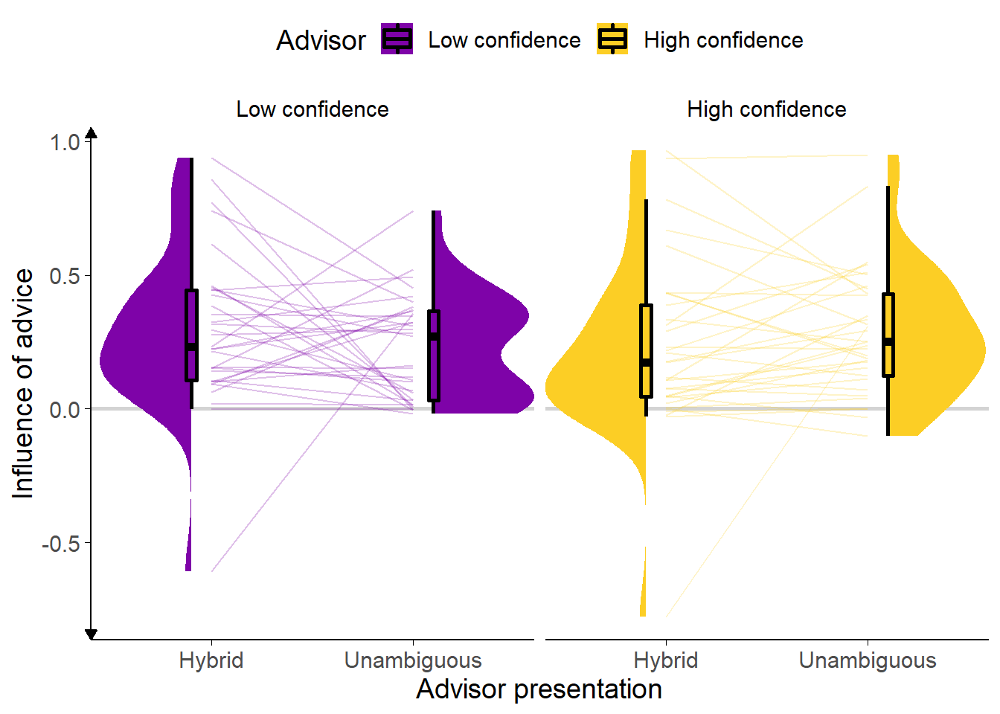
Figure 7.18: Advice influence in Experiment 8.
Participants’ weight on the advice for advisors in the Test stage of the experiment. The shaded area and boxplots indicate the distribution of the individual participants’ mean influence of advice. Individual means for each participant are shown with lines in the centre of the graph. The theoretical range for influence values is [-2, 2].
## Interaction calculation: Unambiguous - HybridThe main hypothesis in this experiment is that advice will be treated differently if it comes from an identifiable as opposed to an ambiguous source. We thus expect that the High confidence advisor’s advice will be more influential when the source is ambiguous, because when participants know that the advice comes from the High confidence advisor, they should also know that the confidence score represents that advisor’s low confidence advice (which is less likely to be correct). The opposite prediction is made for the Low confidence advisor. These predictions are assessed on Key trials. Key trials occur in that band of confidence where the advice could have come from either advisor (Figure 7.17). Where advice is given with very high objective confidence it is not likely to come from the Low confidence advisor; likewise, where advice is given with very low objective confidence it is not likely to come from the High confidence advisor. It is only in that region where the advisors’ use of the confidence scale overlaps that the Hybrid presentation is genuinely ambiguous.
Our predictions were not borne out in the data. A 2x2 ANOVA of influence scores with factors of Advisor type (High versus Low confidence) by presentation (Unambiguous versus Hybrid) indicated no significant effects. Furthermore, the numerical direction of effects was against our prediction. As expected, there was no main effect to indicate that Hybrid presentation would be more or less influential than Unambiguous presentation (F(1,32) = 0.00, p = .961; MUnambiguous = 0.26 [0.19, 0.32], MHybrid = 0.26 [0.16, 0.36]), and no main effect of advisor to indicate that, absent Unambiguous presentation, one advisor was more influential than the other (F(1,32) = 0.02, p = .896; MLowConfidence = 0.26 [0.20, 0.32], MHighConfidence = 0.26 [0.17, 0.34]). However, contrary to predictions, the interaction is not significant (F(1,32) = 3.91, p = .057; MUnambiguous-Hybrid|LowConfidence = -0.06 [-0.19, 0.06], MUnambiguous-Hybrid|HighConfidence = 0.06 [-0.04, 0.16]), and in fact goes in the opposite direction numerically to the one we would expect. The Unambiguous presentation of the Low confidence advisor is less influential, and the Unambiguous presentation of the High confidence advisor more influential than their Hybrid presentation counterparts.
7.3.2.3.4 Predictors of advice influence
It is quite possible that participants failed to adequately grasp the calibration of the advisors, despite the lengths that we went to in order to highlight the importance of this feature. Indeed, a paired T-test of the influence of the advisors in Key trials where they were presented Unambiguously indicated that the High confidence advisor was numerically more influential than the Low confidence advisor (t(32) = 1.33, p = .191, d = 0.26, BFH1:H0 = 1/2.39; MHighConfidence = 0.28 [0.20, 0.37], MLowConfidence = 0.23 [0.16, 0.30]). Statistically, there was not enough evidence to conclude whether or not the effect was present or absent.
This suggested that participants were simply adopting a heuristic that more confident advice was more likely to be correct – entirely ignoring the calibration of the advisors. Indeed, linear mixed modelling indicated that, when predicting the influence on Key trials from the advisor, presentation, advisor-by-presentation interaction, and advice confidence (with random intercepts for participant), only advice confidence was a significant predictor (\(\beta\) = 0.01 [0.01, 0.02], df = 509.64, p = < .001, BFH1:H0 = 2.5e4). The other main predictors were both demonstrably absent (\(\beta_{\text{High confidence advisor}}\) = -0.05 [-0.18, 0.07], df = 490.18, p = = .390, BFH1:H0 = 1/5.10; \(\beta_{\text{Unambiguous presentation}}\) = -0.08 [-0.20, 0.05], df = 490.11, p = = .228, BFH1:H0 = 1/5.14), and there was not sufficient evidence to adjudicate on the presence of an interaction (\(\beta_{\text{High confidence advisor, Unambiguous presentation}}\) = 0.13 [-0.04, 0.31], df = 490.14, p = = .142, BFH1:H0 = 1/1.80).
7.3.2.4 Discussion
We attempted to manipulate participants’ ability to use their knowledge of advisors’ idiosyncratic confidence expression to perform our Dates estimation task. We were unable to demonstrate that participants did so, and it appeared from our linear modelling that participants paid more attention to the advice than its source. The predicted interaction between advisor confidence and advisor presentation (labelled versus hybrid) was not statistically significant, and indeed trended in the opposite direction to that hypothesised. It appeared from the numerical patterns, where participants were more influenced by moderate confidence advice if it was clearly labelled as coming from the High confidence advisor (despite therefore representing lower subjective confidence), and vice-versa for the Low confidence advisor, that participants had developed a mild positive association between the more confident advisor and more confident advice, treating that advisor as more trustworthy even when they expressed a moderate level of confidence.
There are several features of this experiment that may have led to the underwhelming conclusion. First, the advisors’ gravatar images may be harder for participants to differentiate than human faces. Second, without offering an incentive beyond the innate appeal of the task, participants may not have been motivated to absorb the complex confidence calibration information presented to them, especially where the time cost to do so is not offset by performance-based payment. Third, the somewhat artificial nature of the task may limit participants’ interest in the character of the advisors. Fourth, it may be quite difficult to overcome the widespread heuristic that higher confidence advice is more likely to be correct (Soll and Larrick 2009; Moussaïd et al. 2013; Bang et al. 2014; Pulford et al. 2018; Price and Stone 2004). Adding additional information beyond the simple introductory speech bubble may have helped to alleviate this issue.
In short, we were either unable to get participants to attend to advisors’ confidence calibration or people do not use confidence calibration information about advisors to modulate the influence of their advice. Whether or not additional appeal and character for the advisors would improve participants’ sensitivity to the advisors’ use of the confidence scale, these results cast doubt on a the practical applications of our model of advice-taking.
7.4 General discussion
Simulations in the previous chapter§6 suggested that egocentric discounting might arise as a rational response to context, and identified some contextual features that would make egocentric discounting rational. The experiments presented in this chapter tested this idea, based on the assumption that priming these reasons should lead to changes in egocentric discounting. Taken together, the results of these 4 experiments provided mixed support for this idea. The results of the direct benevolence manipulation in Experiments 5 and 6 show that people are sensitive to the motivations of their advisors, and exercise appropriate caution where those motivations may mean the advice is misleading. Experiment 5 also demonstrated that, even where advice is considered trustworthy, it is discounted when coming from a less trusted advisor. Together with existing literature on the effects of advisor expertise (Soll and Larrick 2009; Ilan Yaniv and Kleinberger 2000; Rakoczy et al. 2015; Schultze, Mojzisch, and Schulz-Hardt 2017), this supports the idea from the models that advice-taking can be flexibly adjusted according to the context.
The results of the confidence mapping experiments were less conclusive. We were unable to produce a manipulation which was sufficiently clear and strong to produce observable effects. It is plausible that people are sensitive to their knowledge of an advisor’s confidence mapping, but it is also plausible that this degree of flexibility is beyond most people, and that simple heuristics such as relying on cultural norms about the meanings of metacognitive terms (Roseano et al. 2016; Dhami and Wallsten 2005; but see Wallsten et al. 1986) are used instead of complex calculations. The lack of flexibility on the time-scale of a behavioural experiment does not, of course, negate the possibility of flexibility on the time-scale of a human interpersonal relationship (perhaps there are a certain number of people whose confidence mappings we can track, as suggested by Robin Dunbar’s Social Brain Hypothesis (Dunbar 2010)20). Nor does it negate the possibility of a genetic or cultural evolutionary mechanism producing advice discounting as a protection against unknown confidence mapping, although it is questionable whether advice has been occurring in human societies for long enough to allow the former to take place. We have a plausible explanation of egocentric discounting that only relies on rational responses to environmental effects. These effects are ubiquitous, and thus a ubiquitous egocentric bias prior to engaging with the specifics of a situation makes sense. It is entirely plausible that experiments showing egocentric discounting behaviour fail to overcome the hyper-priors held by participants that taking advice is risky for various reasons.
We saw in the first part of this thesis§3 that people are sensitive to the quality of advice and advisors, and will curate their information environments based on that sensitivity. We have seen in this section how the properties of the information environment can change people’s sensitivity to advice.
This work presents a picture of egocentric discounting that portrays it as a feature, not a bug. Overall, manipulations that affect the degree to which people take advice have the effects predicted by a normative theory: more advice is taken from advisors who are better at the task (e.g. Ilan Yaniv and Kleinberger 2000; Rakoczy et al. 2015; Sniezek, Schrah, and Dalal 2004; Soll and Mannes 2011); more confident advice is weighted more highly (Pulford et al. 2018; Soll and Larrick 2009; Moussaïd et al. 2013; Bang et al. 2014; Price and Stone 2004) (and people show a positive association between confidence and accuracy (Pulford et al. 2018)); advisors with whom judges have stronger relationships are trusted more (van Swol and Sniezek 2005; Sniezek and Van Swol 2001); and advisors with an incentive to mislead are trusted less (Bonner and Cadman 2014). With changes in advice-taking accounted for well by the normative model, only the base rate stands in need of explanation: the egocentric discounting phenomenon that people take less advice than they should. I explain this base rate reduction by appealing to the wider context of participants’ personal, cultural, and evolutionary histories. Egocentric discounting is irrational only where the judge can be sure the advice will be, on average, as good as their own initial estimate. It is our contention that this assumption is simply not true in everyday life, and there is no reason why these background assumptions should be waived within the confines of a Judge-Advisor System, especially in the context of psychology experiments (which are notorious for deceiving participants).
The behavioural experiments extending the results of our evolutionary computational simulations were messier than we had hoped. The apparently obvious result that people take less advice from advisors who may sometimes mislead them proved quite difficult to demonstrate in practice – participants in early experiments did not appear to attend very much to the source of advice and it required a heavy-handed manipulation alongside splitting experience with the advisors into separate blocks to produce the effect seen in simulation. The difficulty we encountered would cast serious doubt on the amount of support we can derive from our experiments, except that the results proved robust once established: pre-registered replications showed very similar patterns in independent samples.
There is one major feature of advice-taking that has received relatively little investigation, yet that would, if real, be entirely inexplicable in terms of evolutionarily optimal hyper-priors. This is the finding that people tend to consider all advisory estimates they receive as a single, multifaceted opinion, which is then integrated with their own individual opinion§5.2.2.4. Crucially, this seems to happen no matter how many advisory estimates are supplied (Hütter and Ache 2016; Yonah and Kessler 2021). Some studies have found the opposite – rational weighting of advice according to the size of the group that produces it: S. A. Park et al. (2017) showed that a Bayesian model that took group size into account outperformed other models of advice-taking, although linear mixed modelling of their behavioural data did not show a group size effect except as an interaction with opinion differences; Martino et al. (2017) found that participants’ ratings of on-line shopping products were influenced by other users’ reviews, although they did not present evidence as to how closely social influence scaled with the number of reviewers. A rational approach to egocentric discounting might attempt, as we have above, to explain how it is sensible to afford less weight to another’s opinion compared to one’s own, but it cannot explain how it is sensible to afford the same weight to one’s opinion whether integrating it with the opinions of one advisor or of several advisors. At best, we may be able to offer arguments that plead for different interpretations of advice from multiple estimates: many presentations may represent multiple estimates as a single estimate, and ones that do not may impose a cognitive load that leads to participants ignoring some information; or perhaps people sometimes interpret a mixture of answers as representing a general confusion and down-weight the group estimates as if they were advisory estimates given with very low confidence. Advice-taking is sensitive to particulars of task, presentation, and context, and the question of the extent to which multiple pieces of advice are weighted individually versus as a single piece of advice is also likely sensitive to those factors.